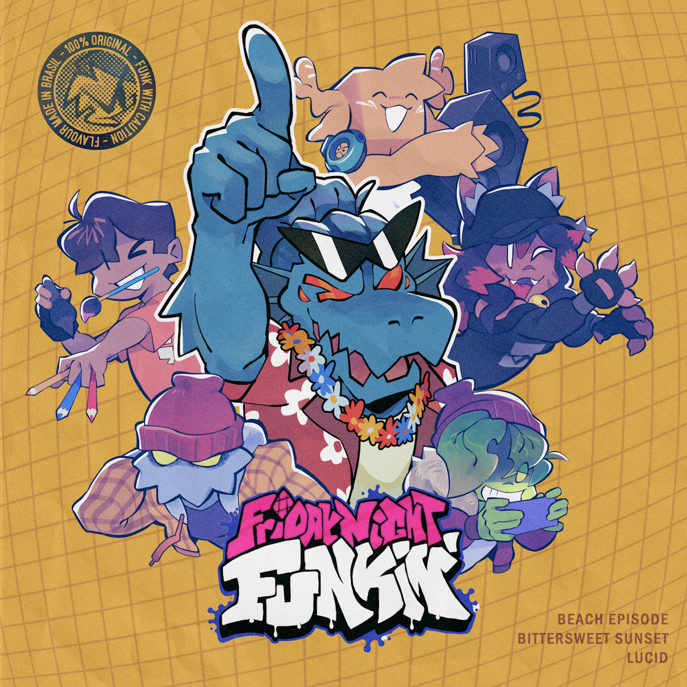
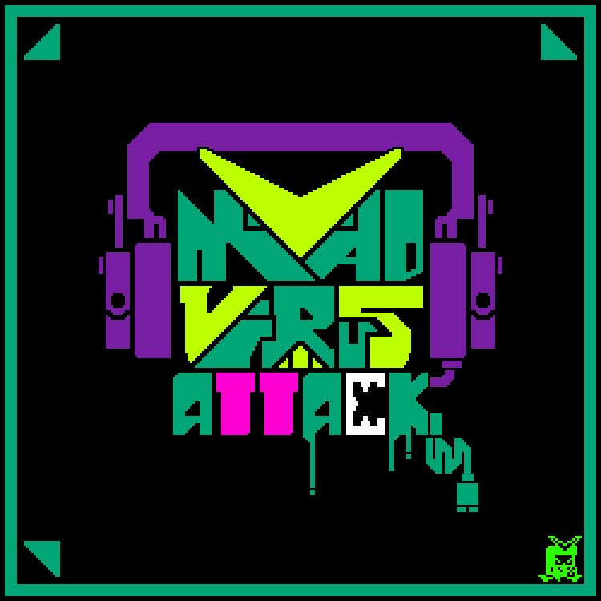

Music
Here you may find some of my musical works, including original compositions, remixes and arrangements, "High-Quality Rips" and game-inspired works.
You may also visit my YouTube channel and SoundCloud profiles, both of which have tracks I have not shared here, such as this one!
(Dis)assemble Original Soundtrack

I have composed the soundtrack for the game (Dis)assemble, a cute and colorful puzzle game about combining sentient pieces to change how they move. Developed by Dragon Fruit Studio, all tracks were composed to dynamically switch between each other, with a playful style inspired by music from Snipperclips.
(Dis)assemble - SteamFRIDAY NIGHT FUNKIN' MODS
Bittersweet Sunset - Mano's Beach Hangout OST
 (Art by @pb_lauro!)An original composition for my upcoming Friday Night Funkin mod, titled "Manos Beach Hangout". This track was initially conceived as purely acoustic, since it is meant for a level that takes place on a beach during a dazzling pink sunset. I eventually opted to remake it with a few more typically electronic elements, which gave it a much-needed punch.
This kind of "vocals" is common for all my Friday Night Funkin works, though they may sound vastly different between tracks. And in case you are wondering, that first voice is my own.
Game Over (Mano) - Mano's Beach Hangout OST
(Art by @pb_lauro!)Another composition for the same Friday Night Funkin mod, meant to play on the game over screen for the new playable character it adds. Incorporating the FM bass with these chords was super fun.
INTOXIC8 - Mad Virus Attack OST
 (Art by @pb_lauro!)To wrap up Friday Night Funkin content, this one was made for the Mad Virus Attack mod. It is meant for an epic battle between a hero and a retro game villain that corrupts the world. My friend @MegaloPaleWhite was very helpful with this one.